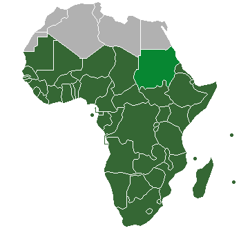
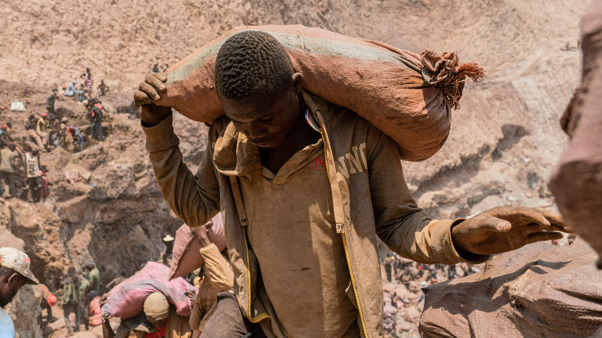

Child labor is a problem that persists even in today's world.
In Sub-Saharan Africa, this issue is the most severe.
These are the facts about child labor in the region of Sub-Saharan Africa:

- Sub-Saharan Africa has the highest rate of child labor in the world (~86.6 Million as of 2021).
- Many children work in artisanal mines in extremely hazardous conditions for dirt cheap pay. These children risk death from explosions, falling rocks, tunnel collapse. They are exposed to air full of dust and sometimes toxic gasses.
- A third of Ghana’s gold production and mining process comes from artisanal, small-scale mines called Galamsies. Most of these mines operate illegally without a license and encourage child labor while damaging the environment. These mines also expose workers to high levels of mercury, which can cause serious health problems.
- The Democratic Republic of Congo is notorious for its cobalt mines. Human trafficking and child labor is evidently present in these operations. In addition, cobalt is toxic to touch and breathe. Cobalt is an essential component in producing lithium-ion batteries.
- Some families have no choice but to work in these dangerous mines to sustain their livelihood, which is why it can be considered a form of modern day slavery.
